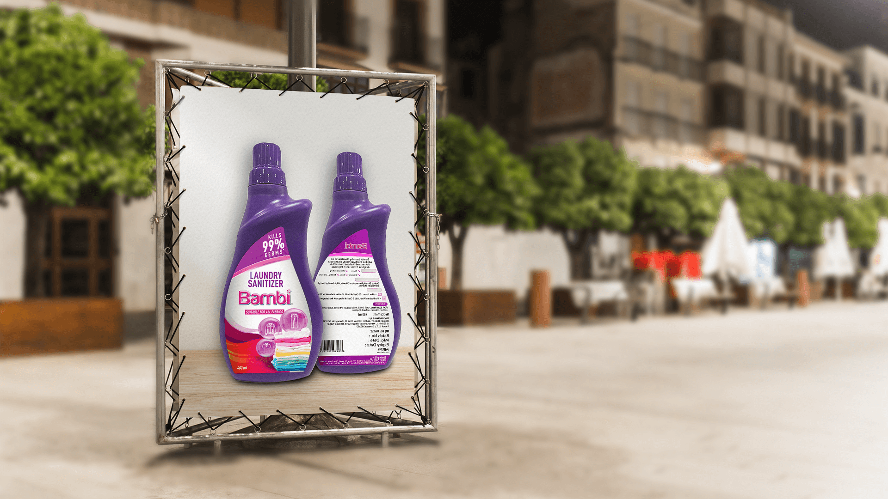
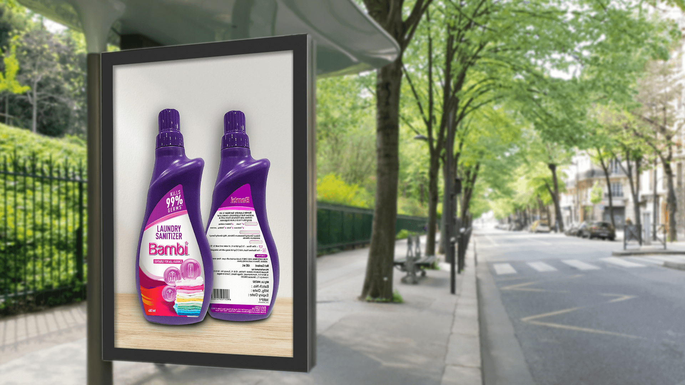

The audience had to recognise laundry sanitizing as a distinct step, not mistake the product for detergent or fabric conditioner.
← Back to workProtection goes in.
Bambi · Laundry Sanitizer
Protection goes in.
Confidence comes out.

Project overview
An invisible benefit.
Made unmistakably visible.
Laundry sanitizer works beyond the visible clean. The communication needed to make that additional hygiene step feel clear, relevant and easy to remember.
The print system brings the front and back pack together: one side delivers the immediate germ-protection promise while the other reinforces product information and use.
- Product
- Laundry Sanitizer
- Promise
- 99% Germ Protection
- Application
- All Fabrics
- Expression
- Direct + Reassuring
The communication challenge
Go beyond clean.
Without adding complexity.
The core benefit, format and pack needed to stay readable in fast-moving outdoor environments with very little viewing time.
The creative device
Lead with the pack.
Let protection speak first.
The sculpted purple bottle creates a distinctive silhouette against a quiet white field, giving the product maximum recognition from a distance.
Front-and-back packaging turns one composition into both promise and proof: immediate protection up front, practical detail alongside it.
The fast-read system
Pack. Proof.
Every fabric.
- 01
Recognition
A bold bottle silhouette makes the category asset immediate.
- 02
Protection
The germ-kill message provides the central reason to believe.
- 03
Relevance
The fabric stack connects the benefit to everyday laundry.
The work in context
One product signal.
Two daytime environments.
Both supplied applications remain fully visible at their original ratio, preserving the pack artwork, display structure and surrounding street context without cropping.


The outcome
Hygiene made simple.
Protection made memorable.
The final outdoor system converts an unseen hygiene benefit into a bold product message that can be understood quickly across day and night placements.
Pack recognition
The distinctive bottle owns the composition at first glance.
Clear proposition
Germ protection and fabric relevance resolve without clutter.
Flexible presence
The restrained artwork stays legible across varied outdoor settings.
Every wash.One more layer of care.
Need an invisible product benefit made immediately clear?